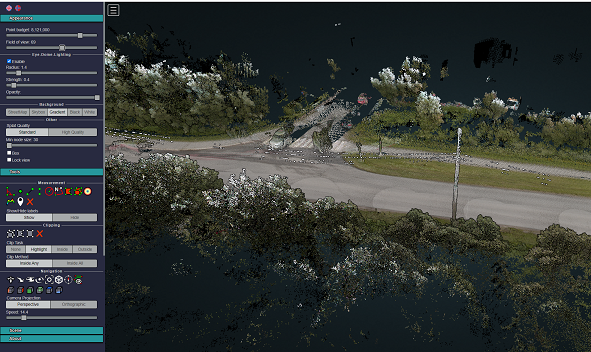

Tools
Measurement
Potree 3D viewer module provides several tools for measurement. This tool set consist of 12 elements. It also has controls for showing or hiding the resulting measurement labels.
Measurements are performed by use of left clicking the mouse on the desired points and right clicking is needed to terminate the process.
Angle |angle|
..|angle| image:: /images/angle.png
This tool measures the tridimensional angle formed by the lines connecting 3 points. To start a measurement, click on the angle icon, then left click on 3 point and the process will be automatically ended.
Point
This tool highlights a selected point and display its XYZ coordinate. To start a measurement, click on the point icon, then click on the desired point and the process will be automatically ended.
Distance
This tool measures the tridimensional distance of the lines connecting a series of points. To start a measurement, click on the distance icon and start clicking on the desired points (two or more). Right click to finish measurement.
Further information such as total length can also be obtained from selecting this under the scene section.
Height
This tool measures the height or vertical distance between two points. To start a measurement, click on the height icon and then click on the desired two points. The process will be automatically ended. Further information can also be obtained from selecting this element under the scene section.
Circle
This tool measures the radius of a circle formed by three points. To start a measurement, click on the circle icon and then click on the desired two points. The process will be automatically ended.
Further information such as Circumference can also be obtained from selecting this element under the scene section.
Azimuth
This tool measures the azimuthal angle of a line. This line is formed by two points selected by the user, the angle is measured in degrees, clockwise from 0 to 360 and starting from the geographical north. To start a measurement, click on the azimuth icon and then click on the desired two points. The process will be automatically ended.
Further information can also be obtained from selecting this element under the scene section.
Area
This tool measures the horizontal area formed by a polygon. To start a measurement, click on the area icon and start clicking on the points forming the desired polygon (three or more). Right click to finish measurement. Further information can also be obtained from selecting this element under the scene section.
Volume (cube)
This tool measures the horizontal area formed by a polygon. To start a meaurement, click on the volume(cube) icon and click on the model to place the cube. It is possible to relocate, rescale and rotate the cube using the displayed handlers. Right click to finish the measurement. Further information can also be obtained from selecting this element under the scene section.
Volume (sphere)
This tool measures the volume formed by a sphere. To start a measurement, click on the volume (sphere) icon and click on the model to place the sphere. It is possible to relocate, rescale and rotate the sphere using the displayed handlers. Right click to finish measurement. Further information can also be obtained from selecting this element under the scene section.
Height profile
The tool icon that looks like a multicolored M. This tool creates a height profile formed by a line on the model. To start a measurement, click on the Height profile icon and then form a line on the model by clicking on the desired points (two or more).
When you mouse over the point cloud data, you should now see a red ball attached to your mouse cursor. This allows you to drop nodes and establish the location of your profile. When you want to finalize your profile double click on the last node. Once a profile is finalized, you can still change its location by clicking on the red nodes and dragging them to a different location.
Further information and options, such as Show 2d Profile, can also been obtained from selecting this element under the scene section.
A profile of the lidar data should now be visible at the bottom of the screen. The profile will also update in real time if you move the profile throughout the data.
The save button in the upper right corner of the profile window will download a las file containing the points from the profile. This is useful for extracting the data you want to use for further analysis.
Annotation
This tool creates an annotation label on a highlighted point on the model. To start a measurement, click on the annotation icon and then click on the desired point. The process will be automatically ended. To edit the annotation, select this element under the scene section, then edit Title and Description.
Remove measurements
This tool removes all measurements on the model. To remove all measurement, click on the “Remove measurements” icon.
Clipping
Point cloud can be clipped by selecting an area. Clipping options include None / Highlight / Inside /outside.
To clip a point cloud, click on the volume clip icon, place the cube on the model and relocate, rescale, and rotate to contain the desired area. Highlight is set by default as the clipping method.
If only the points contained within the cube needs to be displayed, click on “Inside”, otherwise click on “Outside”.
To remove the clipping volume or polygons click on the “Remove all measurements” icon.